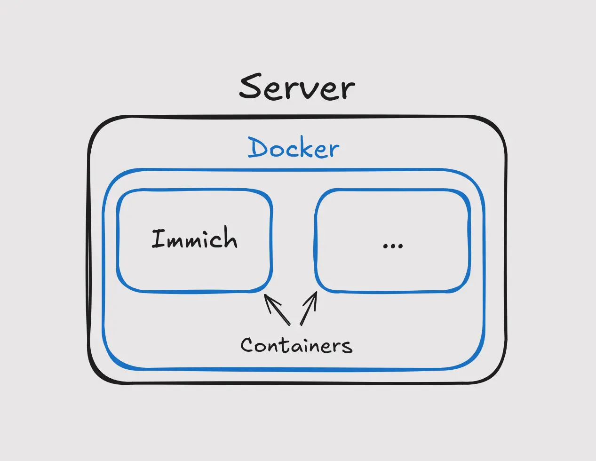
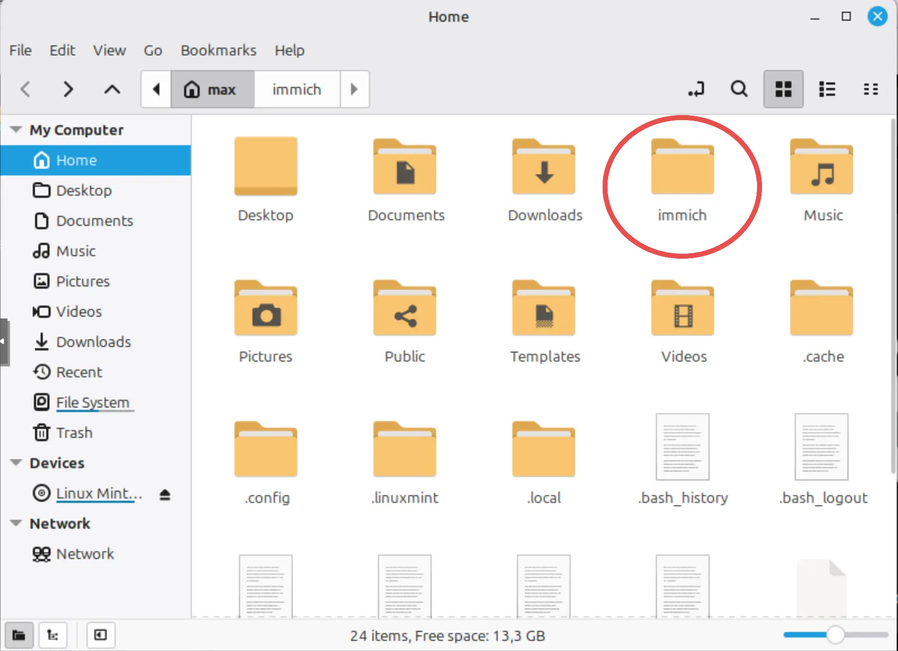
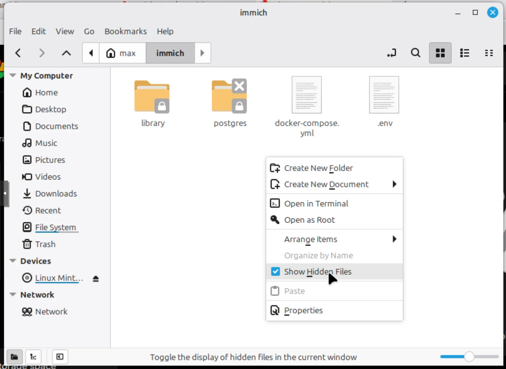

Step 1 — Install WSL or Linux
Immich runs on Linux, so before anything we need a Linux system. There are two options: sticking with Windows or upgrading to Linux.
No matter the choice, a system wipe is always a good idea when you're turning a computer into a server. You start from a clean slate instead of bringing along years of clutter, leftover apps and background processes.
Wipe the machine and install Linux (recommended): Freshly installing Linux is the obvious choice for this project, as it has less overhead (so better performance) and is actually made to be up 24/7. If you're new to Linux I would recommend Linux Mint. Instructions for installing Linux Mint can be found here. If you already know what you’re doing a headless Debian install is a really strong choice.
Running Immich on WSL (Windows): Windows subsystem for Linux (WSL) allows you to run a local Linux system inside of Windows. Installation instructions can be found here. Please keep in mind that this is not nearly as smooth as running Linux natively and the Immich team provides less support for it. If you want to keep your Windows install though, this will eventually work.
Step 2 — Install Docker
Immich runs inside containers using Docker. This allows for segmentation and easy configuration.

To install open up a terminal if you’re running Linux. If you’re on Windows refer to this guide and if you’re on another distribution refer to this guide. If you have chosen for Mint or Ubuntu copy and paste the entire block below into the terminal and press enter.
# Add Docker's official GPG key:
sudo apt update && sudo apt upgrade -y
sudo apt install ca-certificates curl
sudo install -m 0755 -d /etc/apt/keyrings
sudo curl -fsSL https://download.docker.com/linux/ubuntu/gpg -o /etc/apt/keyrings/docker.asc
sudo chmod a+r /etc/apt/keyrings/docker.asc
# Add the repository to Apt sources:
sudo tee /etc/apt/sources.list.d/docker.sources <<EOF
Types: deb
URIs: https://download.docker.com/linux/ubuntu
Suites: $(. /etc/os-release && echo "${UBUNTU_CODENAME:-$VERSION_CODENAME}")
Components: stable
Architectures: $(dpkg --print-architecture)
Signed-By: /etc/apt/keyrings/docker.asc
EOF
sudo apt updateIf there are no errors continue with the following command:
sudo apt install docker-ce docker-ce-cli containerd.io docker-buildx-plugin docker-compose-plugin -yIf there are no further errors Docker is successfully installed!
Step 3 — Downloading and configuring the files
Make a folder to keep everything tidy and pull Immich’s latest configuration files:
mkdir immich && cd immich
wget -O docker-compose.yml https://github.com/immich-app/immich/releases/latest/download/docker-compose.yml
wget -O .env https://github.com/immich-app/immich/releases/latest/download/example.envNext, open up your Files app and go to the immich folder inside of your home directory (should be right there when you open up the app). Right click the empty space and turn on ‘Show Hidden Files’


Now you see the files that we created, and the folders that Immich made for us. Open up the ‘.env’ file. This is where you will configure your Immich server. Here you might want to change the following values:
Step 4 — Start it and log in
In the terminal and from the same folder bring the container up:
sudo docker compose up -dIn the first run it downloads all the files it needs, which might take a few minutes depending on your internet speed. When it’s done open a browser and go to the following web page: http://localhost:2283. Now you’ll be asked to create your admin account.
Step 5 — Port-forward, reverse proxy or Tailscale
Right now Immich is only reachable on your network, meaning you can only reach it at home. There are a few ways of accessing remotely, including poking a hole in your firewall (port-forwarding), but as you can imagine that’s not very secure. I would recommend one of the following three options:
- Tailscale (the easiest option): Tailscale is a VPN that connects your devices directly to each other, as if they were on the same private network, no matter where they are in the world. This allows your devices to talk without poking holes, as it’s all routed through Tailscale’s network. Install Tailscale on the server and all your devices and connect with the same account. Now you can access your Immich instance from those devices.
- A reverse proxy (advanced): The proper way if you want a real domain name and proper HTTPS encryption. You put a proxy in front of Immich and it handles the certificate and forwards traffic. I won’t be going into too much depth as it gets complex quickly, but if you want to dabble with reverse proxies I would recommend starting with Caddy.
- A Cloudflare tunnel (compromise): Here you don’t need a reverse proxy, as the tunnel routes the traffic. You run a small program called cloudflared on the server and connect through their tunnel. Then you can point Immich to your domain in the Cloudflare dashboard and reach it from anywhere. This method comes with the added bonus of having security measures from one of the biggest online security companies and is completely free. The compromise is that you lose a bit of privacy to Cloudflare and when Cloudflare goes down (again) so does your connection to the server.
Step 6 — Have fun!
That’s the hard part done. Install the Immich app, login to your server, switch on backup and start taking pictures. They’ll upload in the background and your library stays yours from now on!
If you enjoyed this and want to host more here are a few open-source projects you could look into:
- Nextcloud: Full cloud suite with files, calendar, tasks, photos, email, contacts and so much more
- SearXNG: A self-hosted privacy-focused search engine
- Jellyfin: Host your own video streaming service with local transcoding, automatic metadata and support for all platforms
- Vert: Open-source local file conversion with no limits and no ads
- Open WebUI: A full-fledged AI interface, similar to that of ChatGPT